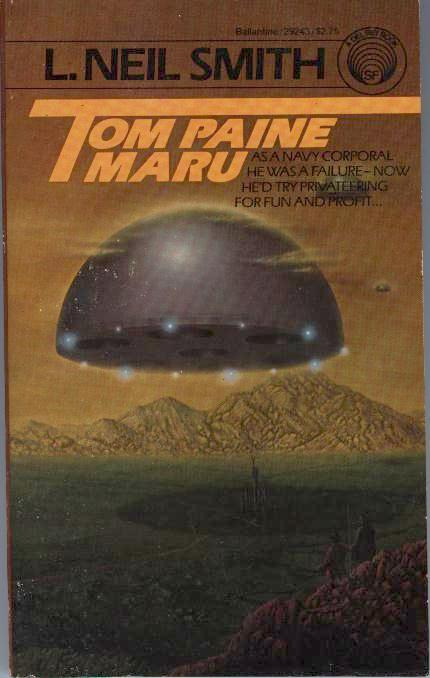

NOTE: Back in Print! [more info]

Tom Paine Maru
by L. Neil Smith
The North American Confederacy reaches the stars at last, its Prime Directive: search out governments wherever they are found to exist—and destroy them!
New York: A Del Rey Book Published by Ballantine Books, 1984
273 pages, mass-market paperback
Library of Congress Catalog Card Number: 84-90870
ISBN 0-345-29243-X
First Edition: August 1984
Cover art by Rick Sternbach